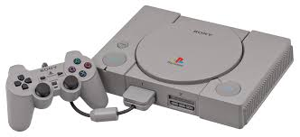

Oque era? e como marcou gerações
O PS1, também conhecido como PlayStation original, foi o primeiro console de videogame da Sony e um marco na história dos jogos. Lançado em 1994 no Japão e posteriormente em 1995 nos Estados Unidos e Europa.
O PlayStation 1, lançado pela primeira vez no Japão, foi o console que marcou a entrada da Sony no mercado de videogames e se tornou um marco na indústria, mudando a forma como os jogos eram desenvolvidos e experienciados.

| Nome | Primeiro lançamento |
|---|---|
| PlayStation 1 | 1994 |